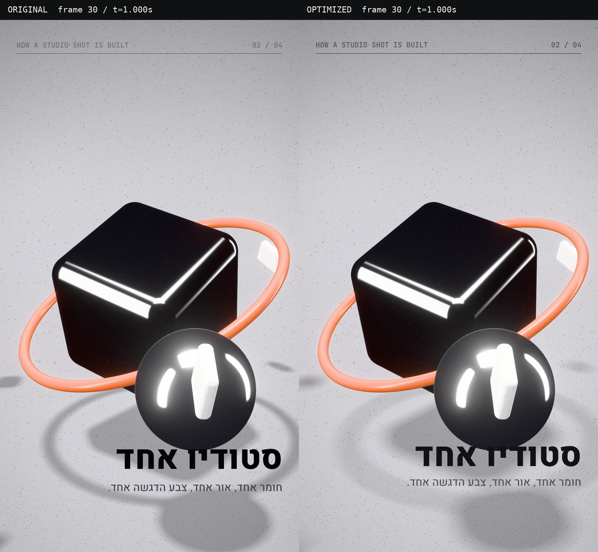
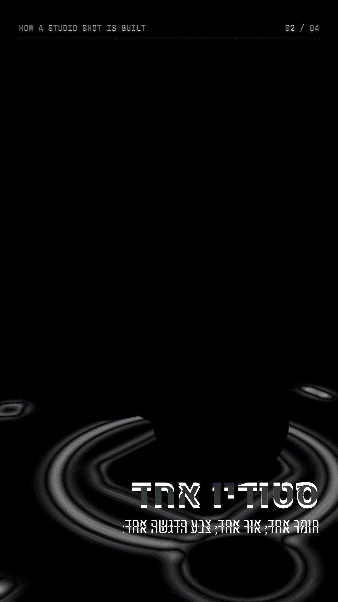

אותה סצנה, אותה מצלמה, אותה תאורה, אותם חומרים ואותו תזמון. בגרסה המאופטמת השתנו רק שני דברים: שכבת ה-HUD מצוירת כ-HTML מעל ה-canvas במקום בתוך WebGL, ומפת הצל VSM קטנה יותר ומטושטשת בפחות דגימות.
כל הזמנים כאן נמדדו במכונת ענן בלי GPU. Chromium מרנדר בה WebGL על המעבד דרך SwiftShader. אלה לא מדידות של GPU ב-Mac, ועל Apple Silicon היחסים בין השלבים צפויים להיות שונים.
שני הסרטונים ננעלים על אותו פריים: החיצים זזים פריים אחד, הפס בוחר פריים מדויק. במצב וילון שתי הגרסאות מוצגות על אותו מסך ומחולקות בקו כתום.
שתי ריצות לכל גרסה, ברצף על אותה מכונה, worker אחד. הזמן "רינדור" הוא WebGL כולל המתנה לסיום ה-GPU (קריאת פיקסל), "צילום" הוא screenshot של האלמנט, "טעינה" כוללת קומפילציית שיידרים בפריים הראשון.
SSIM ו-PSNR של כל פריים בגרסה המאופטמת מול המקורית, על הפריימים שצולמו לפני קידוד H.264. SSIM של 1.0 פירושו זהות מלאה.

